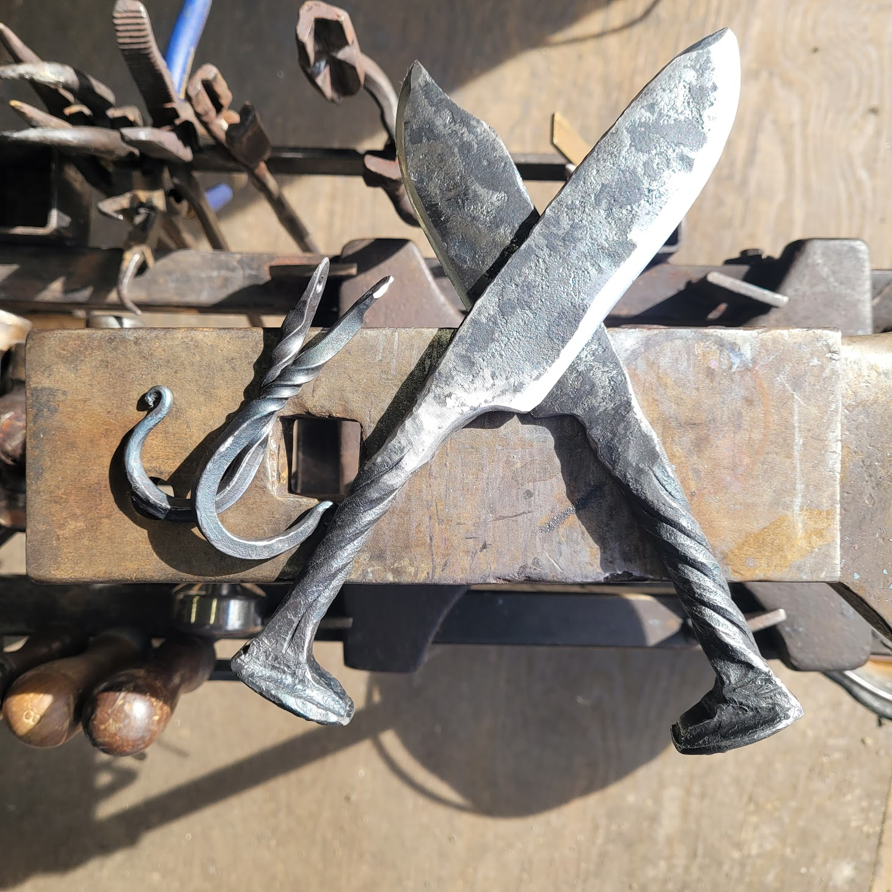
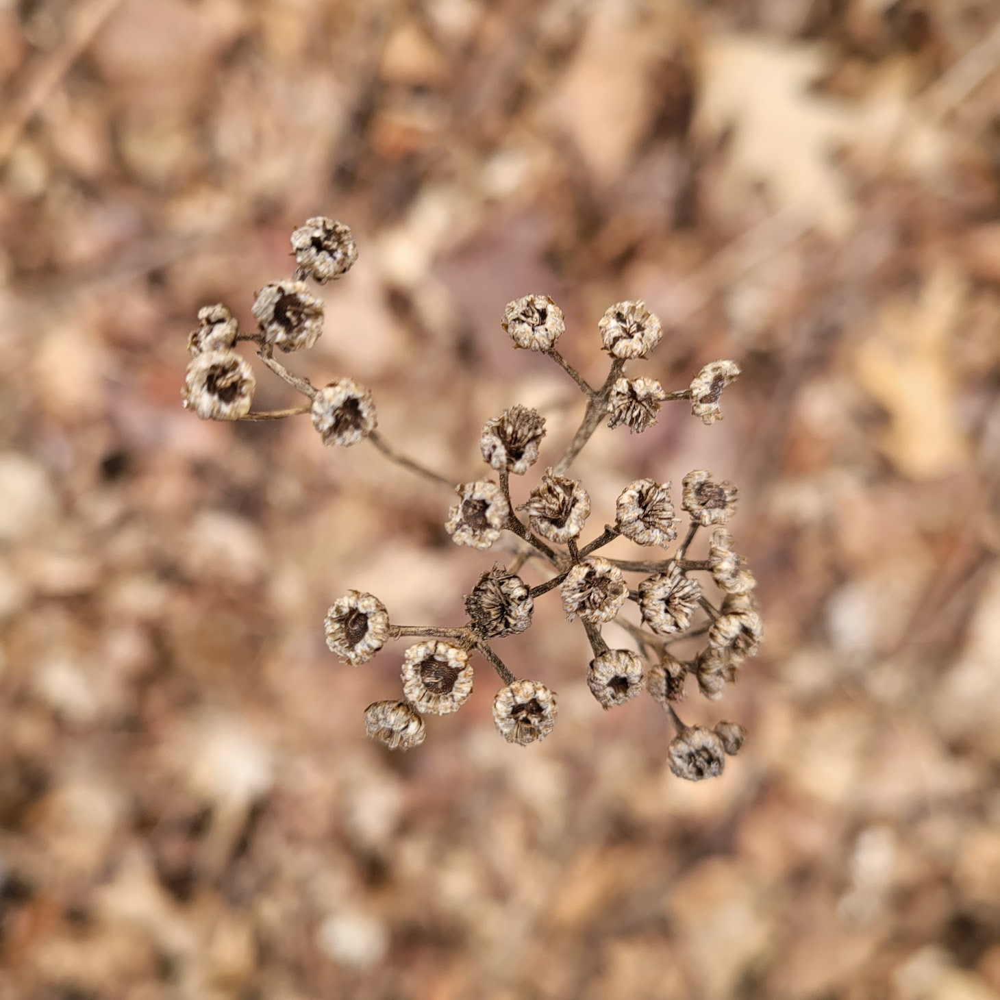
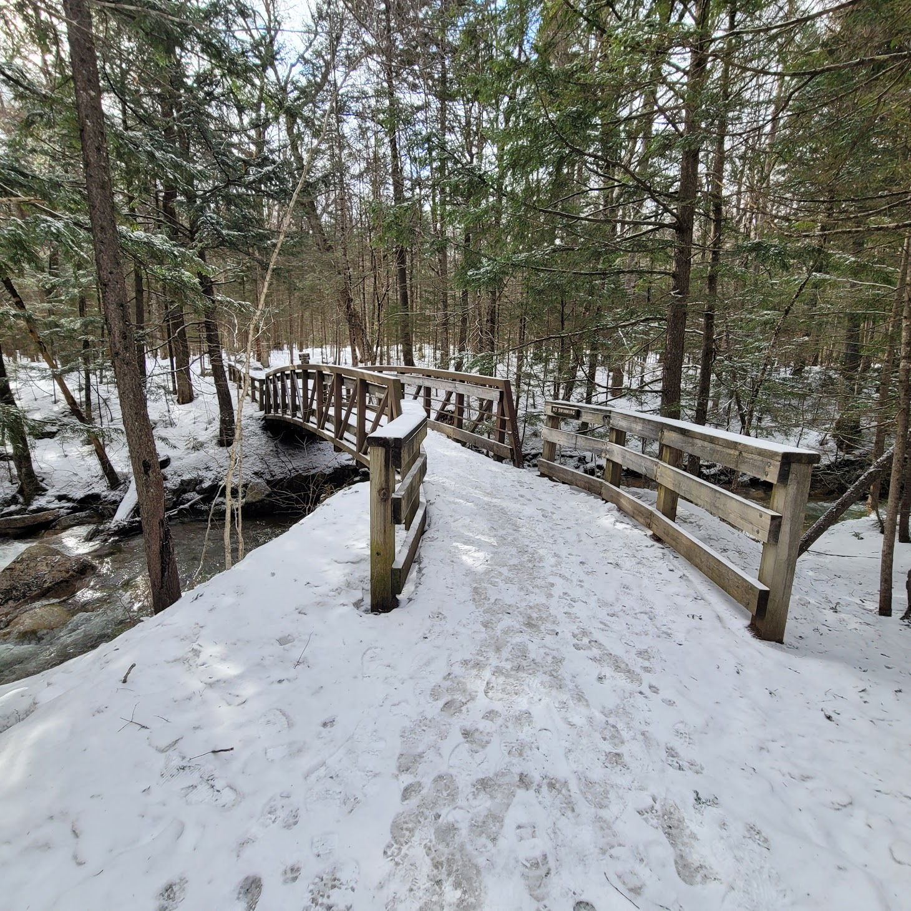
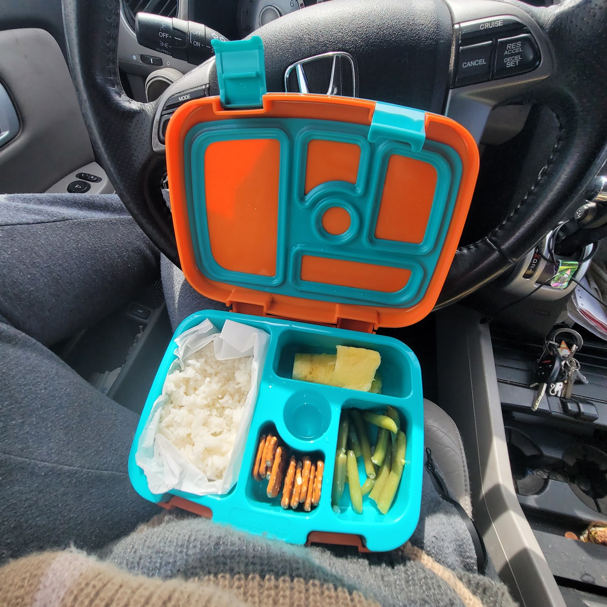
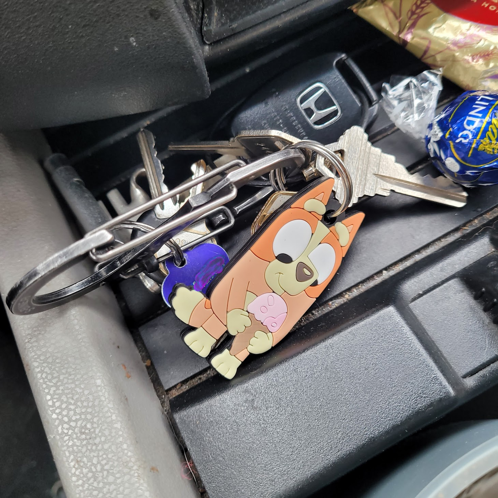
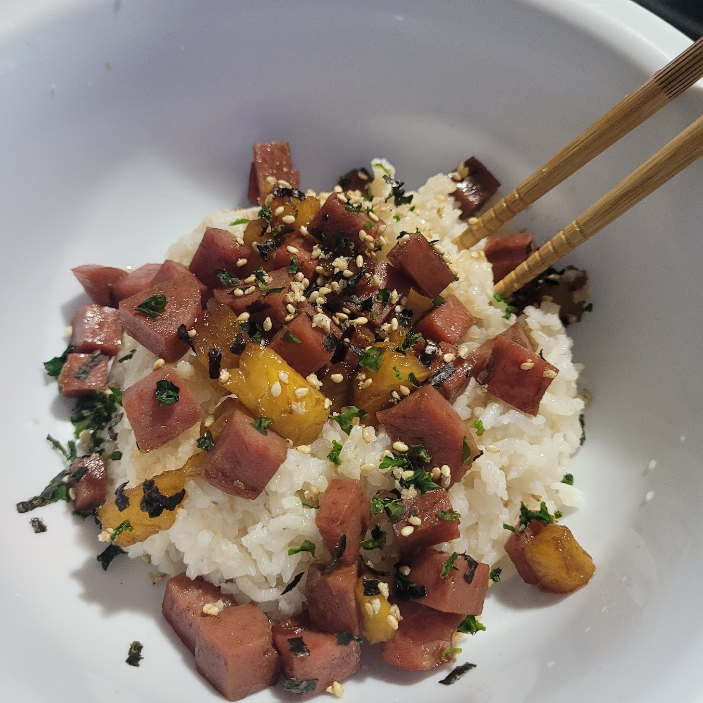
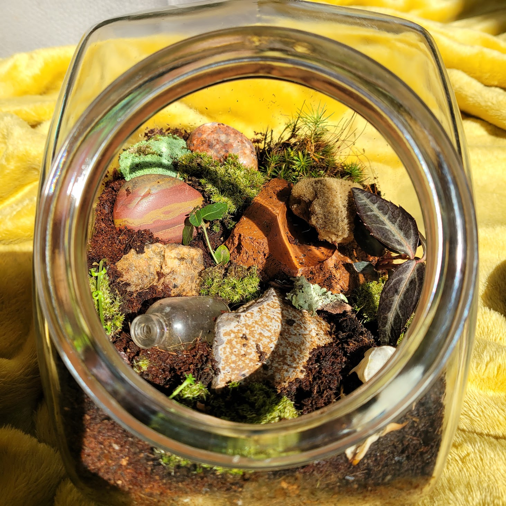

3/27/25 The blacksmithing class was AWESOME! My brother and I were
exhausted by the end but we had such a great time. If you're ever near
Franconia, NH, look up Iron Mike's Forge! Mike was kind, funny,
patient, and helpful; I can't reccomend this man enough!
A smallish glimmer for the week was this gorgeous dried clump of
flowers I noticed when I was at the park with the dogs.

I can't wait to have a "real" camera to shoot with again! 3/21/25 I
finished the classroom part of my work training today! Woohooooo! I
also grabbed my brother and headed up to the White Mountains for an
overnight and, tomorrow, a private blacksmithing class. We're both
super stoked about it 😁 I'm not usually one to enjoy the snow, but I
must say that the light dusting that seems to stick to everything up
here is quite lovely.

3/20/25 Today's glimmer is simple- I passed The Big Test at work
training! Woohoooo! I also passed a re-do test which was important as
well. I don't learn as well from slides and lectures as I do from on
the job training, and I test horribly, so these
pass-it-or-lose-the-job tests are scary! I did it though and am
feeling much more relaxed now.
3/18/2025 Listen, sometimes you gotta find the silly little things to
make your day! Last night I came home from work training frustrated
and exhausted, so I decided to buy myself a little gifty that would
help me feel better and take better care of myself!

LOOK HOW COLORFUL!! This cutie bento box type deal is totally meant
for children, but ya know what, adults deserve bright colors too! It
made me so happy during my lunch break (aka my 30 minutes of freedom
from the torturous monotony of projector slides) today.

The other day I found a little Bingo keychain (huge Bluey fan here)
and that's been making me super happy as well. Gotta find the little
bits of light each day folks!
3/16/2025 I meant to post this the other day but forgot! After my
absolute mess of an attempt at pastina in the rice cooker, I went back
to something that I know how to do well and that I know is a fan
favorite- spam masubi rice!

Is it the best for us, nah, but it IS delicious! I added pineapple
this time which was a huge win. Also got a nori sprinkle topping type
deal from HMart which really made it look (and taste) fancy!
03/15/2025 Y'all because I finally have steady income on the imminent
horizon, I get to be back at the gym! If you were to go back in time
and tell 13 year old me that that was a thing I was excited about she
would laugh in your face, but here we are! Every inch of my body hurts
but I feel the best I've felt in months. The gym I decided on has
heavy bags so I can keep boxing (oh right, some of you don't know that
my old gym was Title Boxing) AND they have a pool AAAAND a sauna! So
fancy! Everyone I've interacted with there so far has been incredibly
welcoming, kind, and unintimidating. Huge win! Here's to sore muscles!
03/13/2025 Yeaaaah that did not go according to plan. Turns out making
pastina in the rice cooker is NOT a go. Oh well, try again some other
time! On the bright and totally unrelated side- I got my nose pierced
the other day!
03/12/2025 Today I'm attempting to make pastina, aka Italian
Penicillin!! I'm cooking half an onion, 3 carrots, and 4 sticks of
cellery in chicken stock until they're soft. Then I'll take the solids
out and blend them and set aside. I think I'll then cook the pastina
in the chicken broth and then add the pureed veggies back in? I'm
doing this all in a rice cooker so it's a bit of an experiment!
Another
happy thing for today is that I upgraded my terrarium to have more
plants and moss.
Oh yeah, I
havent told you about that yet, have I! I have a small terrarium I
built for 5 adorable "milk cow" isopods. Think cow colored rolypoly
bugs! They're super cute and the easiest pet I've ever had by far!
03/11/2025 It got to 60° out today! Warm sunny weather calls for one
thing: lizard time!
Lizard time
is wehre I lay on the ground and simply soak up the sun. It's a 10/10
experience, highly reccomend!
03/07/2025 Today was a good day! I did a Taskr job in the morning and
then headed into Boston for an interview. The job title is "ramp
agent" at the airport- essentially doing all the stuff that happens
outdoors under the plane. It sounded like fun; physically demanding,
working in a team and outdoors, getting to work around
internationally-traveling aircraft. The interview went swimmingly and
at the end the hiring manager said he'd get me set up with a full
application. I thought he meant I'd passed the first step and was on
to round two, but then he congratulated me and I realized he'd meant I
was hired! Gotta love my silly brain sometimes. It'll be about a month
before I'm working, but I'm just excited to have consistent income on
the horizon- gym membership here I come!